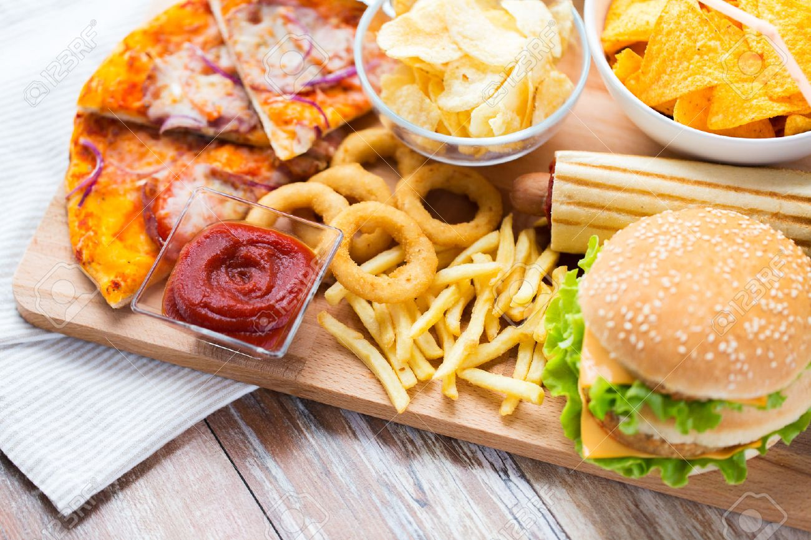

Ungesunde Lebensmittel enthalten oft viel Fett, Zucker und Salz, aber nur wenige Vitamine und Mineralstoffe.
Dazu gehören Fast Food, Chips, Süßigkeiten und Fertiggerichte. Diese Produkte liefern zwar schnell Energie, sind aber schlecht für den Körper.
Laut dem Schulbuch „Biologie heute“ benötigt der Körper eine ausgewogene Ernährung, um gesund zu bleiben.

⬅ Zurück